Research
研究内容
「なぜ生きものはあんなに上手く動けるのか」．この問いを，計測・数理モデル・実機製作の三方向から攻めています．
研究室のスタンス
ロボットを賢くする方法は，ふつう「もっと良いコントローラを書く」ことだと考えられています．
でも生きものを見ていると，どうもそうではないらしい．
昆虫の脳はとても小さく，一本一本の脚をリアルタイムに指令している余裕はありません．
にもかかわらず，彼らは砂の上でも草の茂みでも壁でも，あっさり歩いてしまいます．
つまり，かしこさの一部は身体の側に埋め込まれている．
脚のかたち，筋のやわらかさ，地面から返ってくる力——
これらの相互作用が，コントローラの代わりに仕事をしている．
この「身体がやっている計算」を取り出して理解し，
ロボットの設計へ持ち帰るのが，私たちのやり方です．
そのため研究テーマは，虫の歩行計測から人工筋の試作，
不整地でロボットを走らせる実験まで，かなり幅があります．
解析だけでも，ものづくりだけでも足りない，というのが正直なところです．
01 生きものの歩き方を解剖する
コオロギ，バッタ，ムカデ，カニといった多脚の生きものを対象に，
高速度カメラやモーションキャプチャで歩行を計測し，脚間の協調がどう生まれるかを解析します．
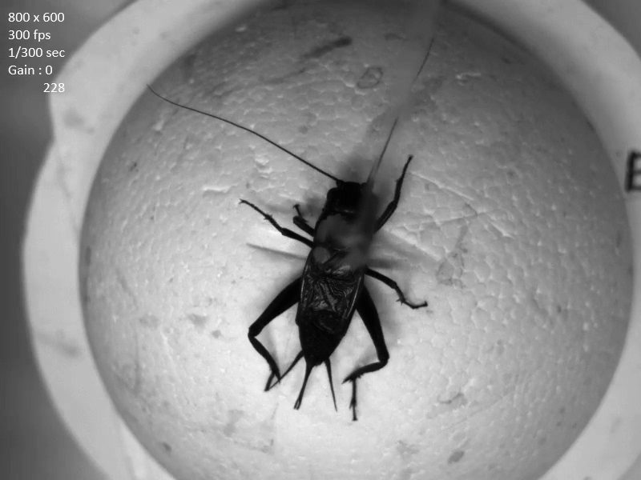
コオロギ（Gryllus bimaculatus）の歩行を高速度カメラで計測
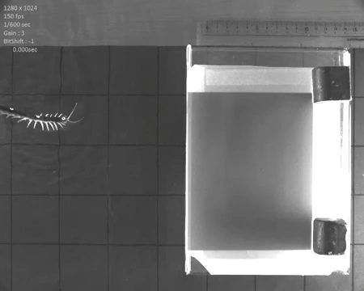
ムカデの歩行計測．脚間の位相関係を解析する
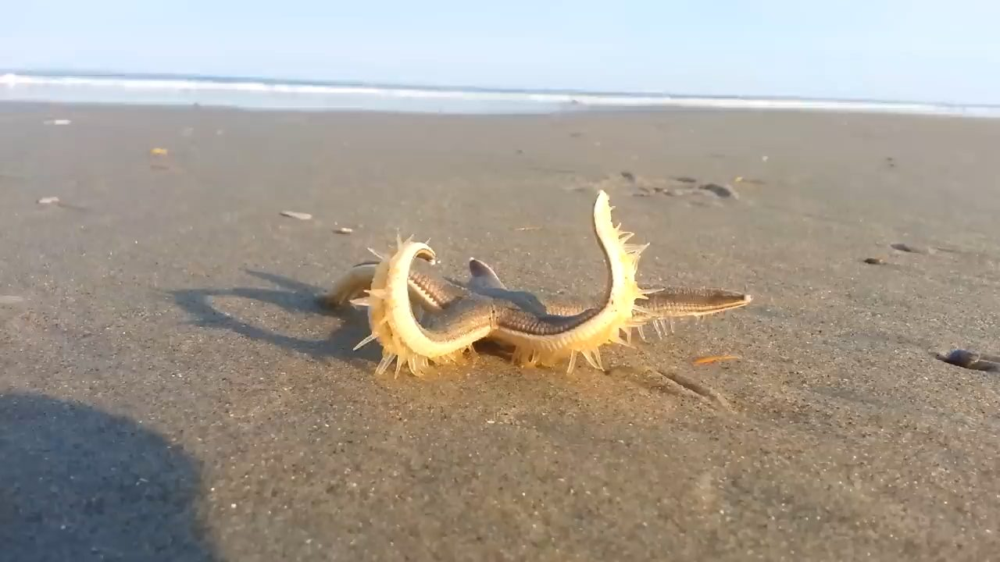
フィールドでの観察も大事な出発点
具体的にやっていること
- コオロギ（Gryllus bimaculatus）の脚間協調メカニズムの解析．神経節どうしの上行・下行信号がリズムの維持にどう効いているかを，実験と位相振動子モデルの両面から検討しています．
- バッタが水平面・垂直面・天井面を歩くときの歩容の違いの解析．重力方向が変わると脚の役割分担がどう組み替わるのか．
- アリの大顎の超高速運動（トラップジョー）の画像計測と，そのラッチ機構のモデル化．
- 楕円形の膝関節がジャンプ性能に与える影響など，関節形状そのものが持つ機能の解析．
02 やわらかいアクチュエータをつくる
McKibben型空気圧人工筋（MPA）は，ゴムチューブを繊維スリーブで包んだだけの単純な構造で，
加圧すると縮んで力を出します．筋肉に似た非線形なばね特性を持つのが特徴で，
この特性自体がロボットの運動を安定化させる——というのが長年の研究テーマです．
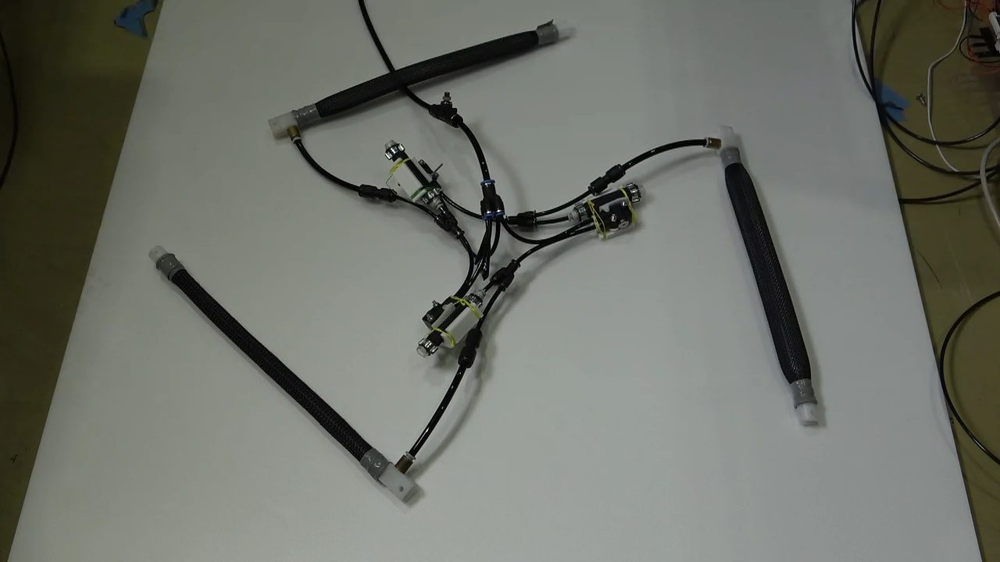
McKibben型空気圧人工筋（MPA）．加圧すると縮んで力を出す
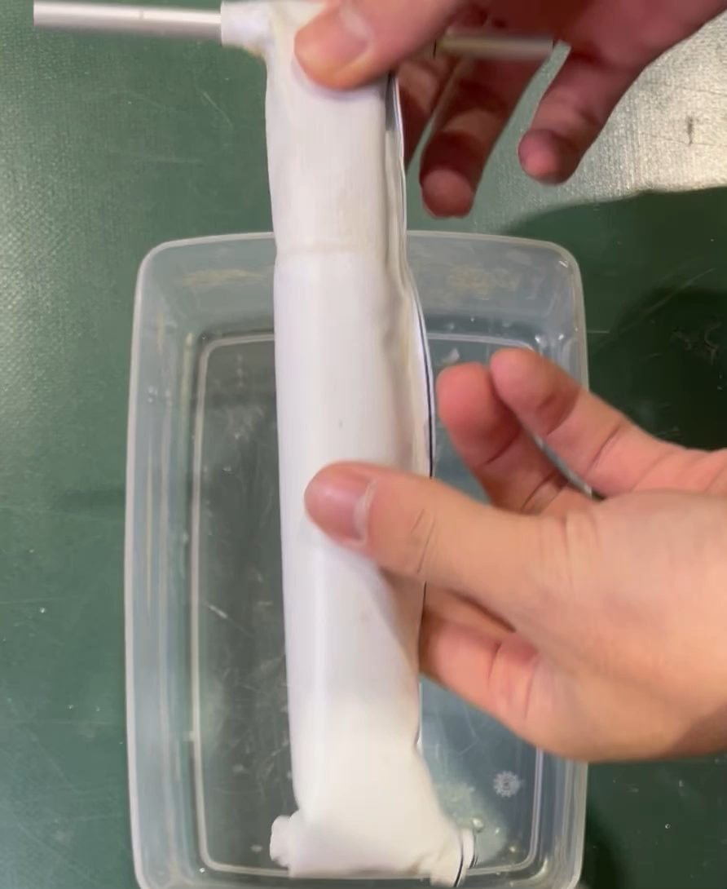
弾性体を組み合わせて曲げ運動をさせる機構
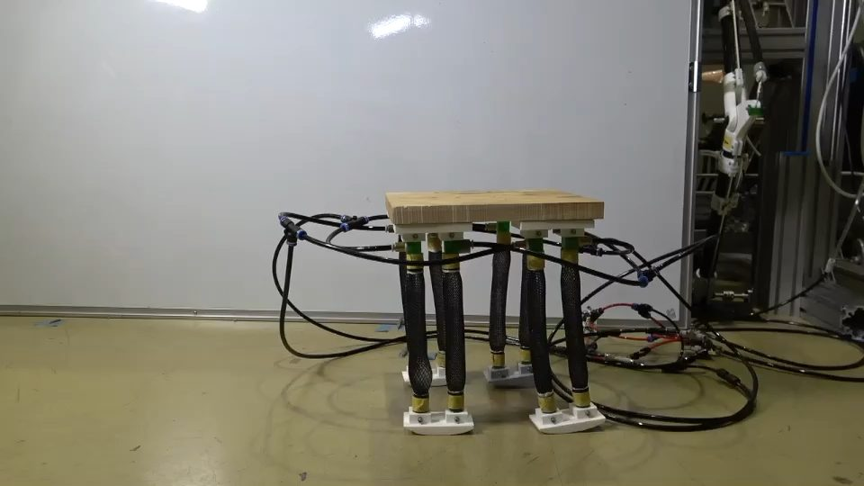
人工筋で駆動する脚ロボット
具体的にやっていること
- LT-PAM（Low-Cost and Tough Pneumatic Artificial Muscle）：入手しやすい材料で，安価かつ丈夫に作れる人工筋の設計．製作手順をオープンハードウェアとして公開しています．
- 小型ソレノイドバルブによる複数MPAの同時制御，動的量子化器を用いた長さ制御．
- 張力センサを人工筋に組み込み，センサレスに近い形で状態を推定する試み．
- 拮抗二関節筋における，張力フィードバックだけによる自律的な協調制御．
- 論理回路のアナロジーで空圧回路を設計する「電気を使わない制御」の検討．
- 弾性体を組み合わせてMPAに曲げ運動をさせる機構，カニ型ロボットの外骨格構造への埋め込み．
03 フィールドを走破する移動ロボット
整地された床で動くロボットは，もうたくさんあります．
問題は，土や瓦礫や斜面といった「決まった形をしていない場所」でどう動くか．
走破性をきちんと測る物差しづくりから，実機開発まで行っています．
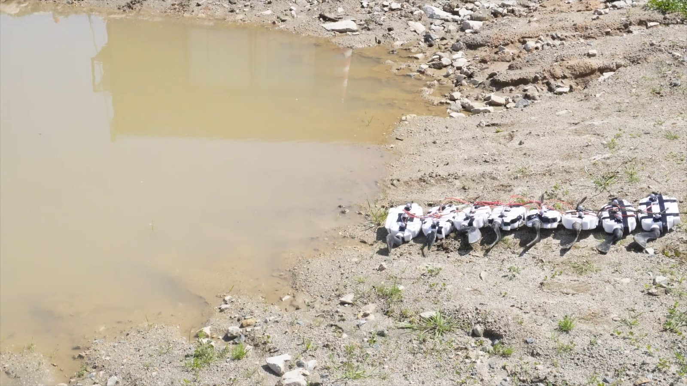
水陸両用ムカデ型ロボット．水たまりもそのまま進む
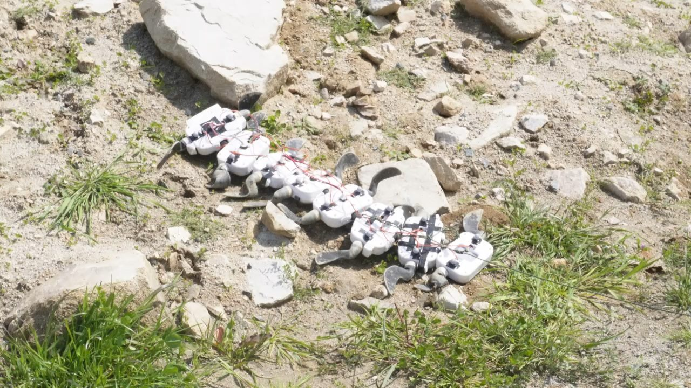
瓦礫の上を走破するムカデ型ロボット
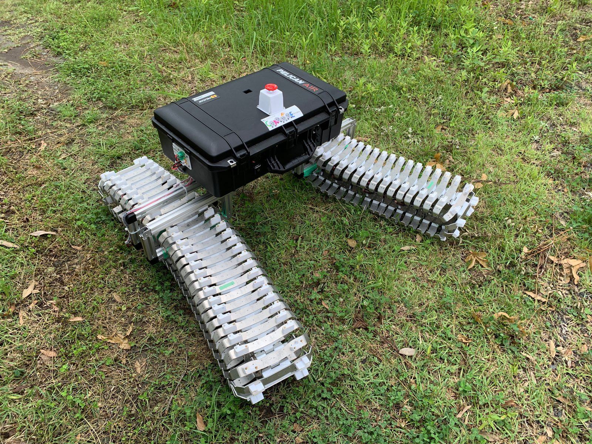
災害対応を想定したモジュール型ロボットの屋外試験
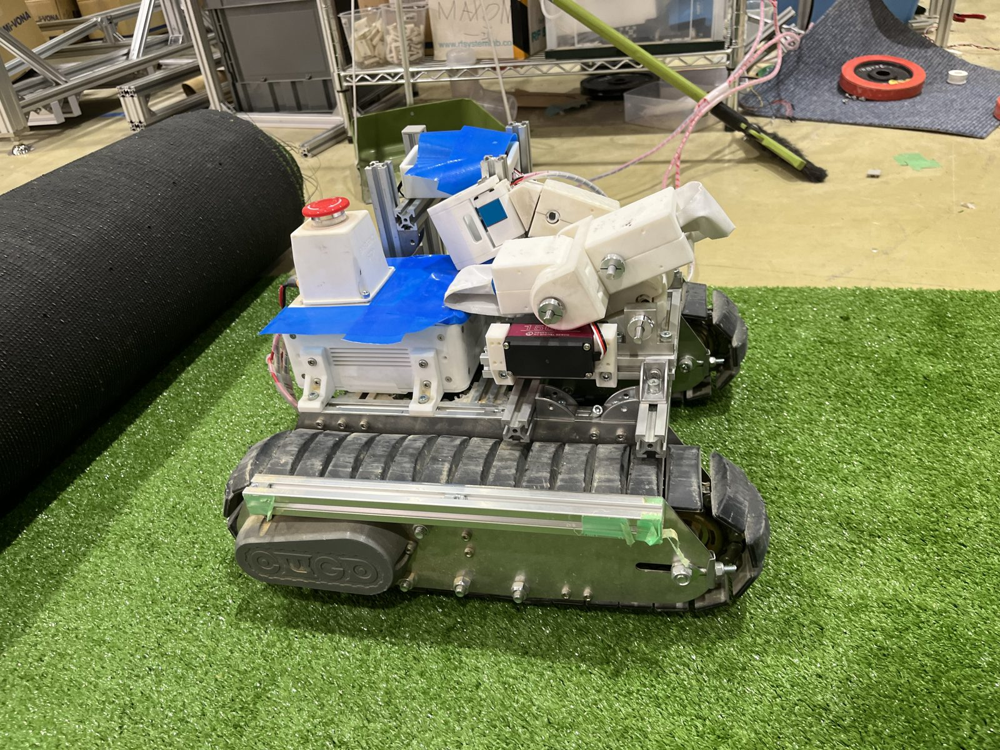
クローラ型の移動プラットフォーム
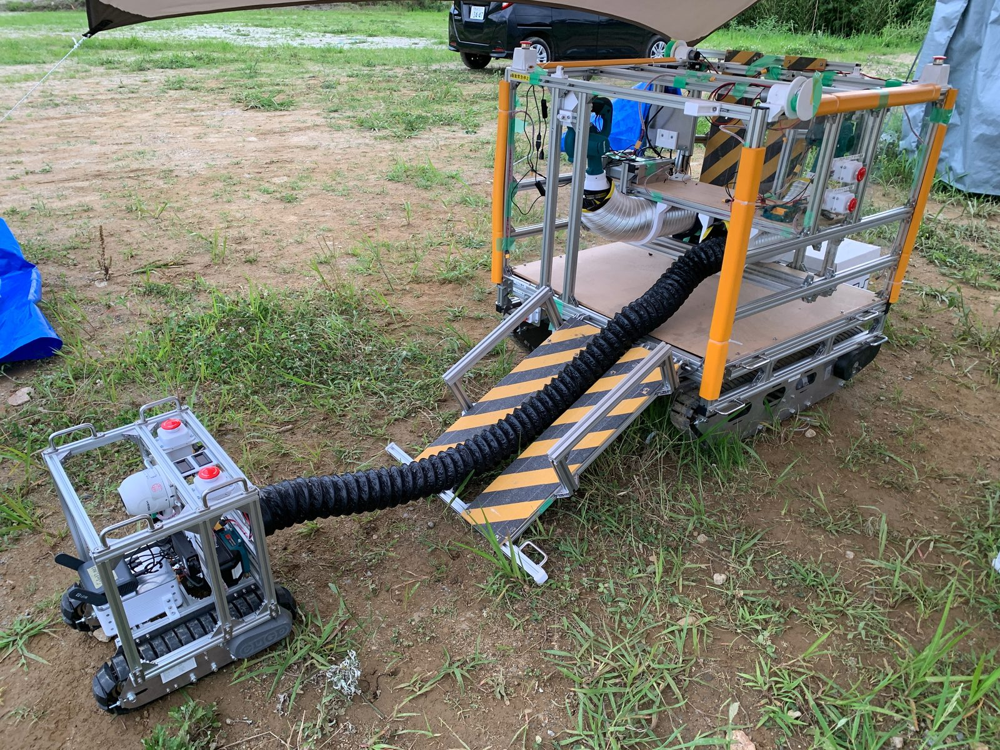
土砂搬送用の柔軟湾曲型コンベア
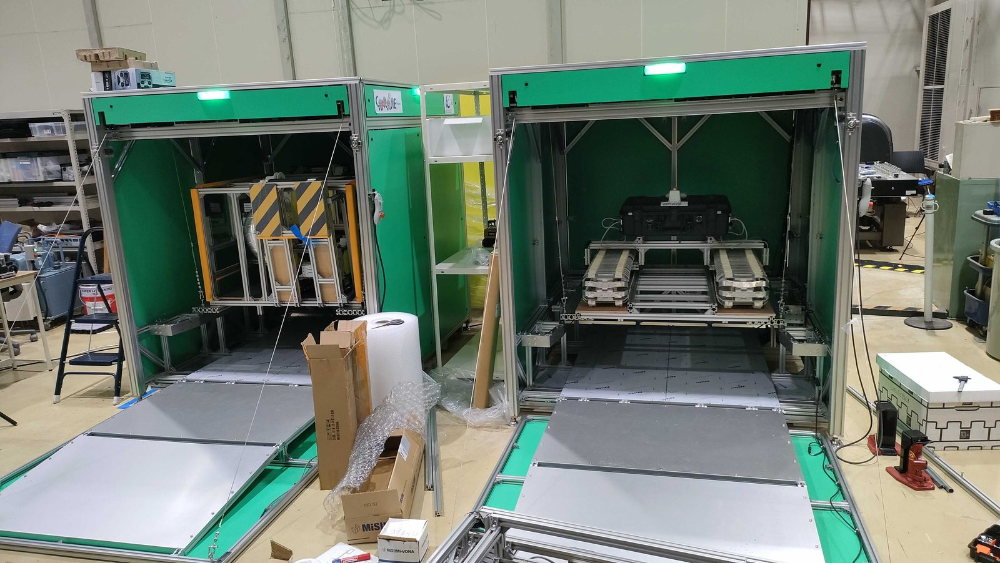
走破性評価のための不整地試験環境
具体的にやっていること
- 地形の空間周波数解析：不整地を正弦波状の地形に分解して捉え，
「どの空間周波数の凹凸に強い／弱いか」という形で移動ロボットの走破性を定量評価する手法．
- 陰的・陽的制御を組み合わせた水陸両用ムカデ型ロボットの開発．
- 災害対応を想定したモジュール型ロボットシステム．目的に応じて機能モジュールを組み替えます．
- 無限定環境での土砂搬送に向けた柔軟湾曲型コンベア，植物の根に着想を得た軟弱地盤用アンカーなど，
現場を意識した要素技術の開発．
- 転動ロボットの旋回運動解析といった，非ホロノミックな移動体の基礎研究．
04 脳がなくても歩けるのか
“Brainless Walking”——中枢のパターン生成器を持たない，
弱いアクチュエータを並べただけのロボットが，動物らしい歩容を自発的に見せる．
この現象は，制御が身体側に「陰に」埋め込まれていることを端的に示しています．
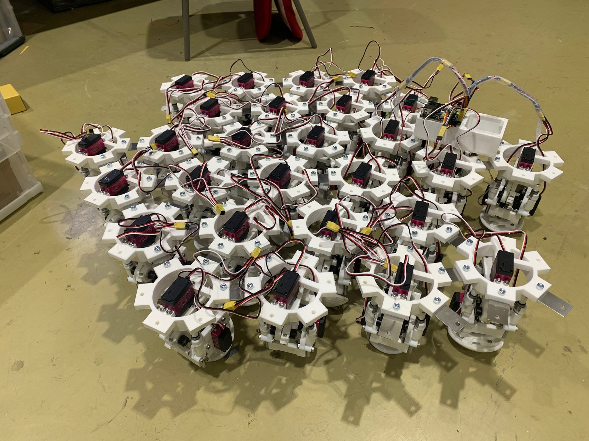
同じモジュールを多数並べた超多脚・超分散型ロボット
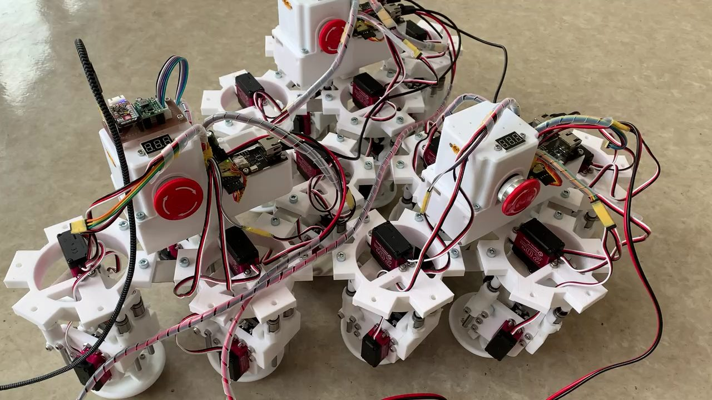
1つ1つは弱いアクチュエータ．並べると歩容が立ち上がる
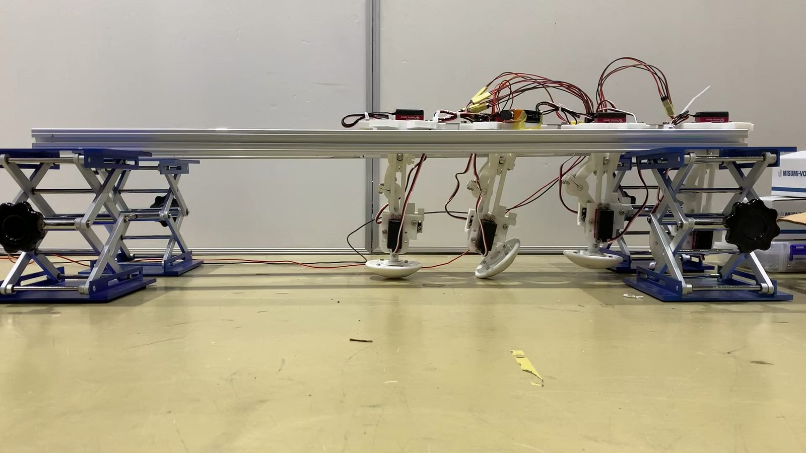
アクチュエータ特性から歩容が創発する条件を実機で検証
具体的にやっていること
- アクチュエータ特性そのものから歩容が創発する条件の解析．拮抗構造における協調のモード分岐．
- 超分散型・超多脚の「無脳歩行ロボット」の試作．
- イモムシのような柔らかい個体が群れたときのロコモーション．
- Physical Reservoir Computing を使って，センサを増やさずに人工筋の状態を読み取る試み．
研究テーマは相談して決めます
ここに書いたのはあくまで研究室の地図です．
配属後は「どのあたりに興味があるか」を聞いたうえで，
本人の得意・不得意も踏まえてテーマを一緒に決めていきます．
ものづくり寄り，解析寄り，プログラム寄り，どの方向にも振れます．
配属を考えている方へ